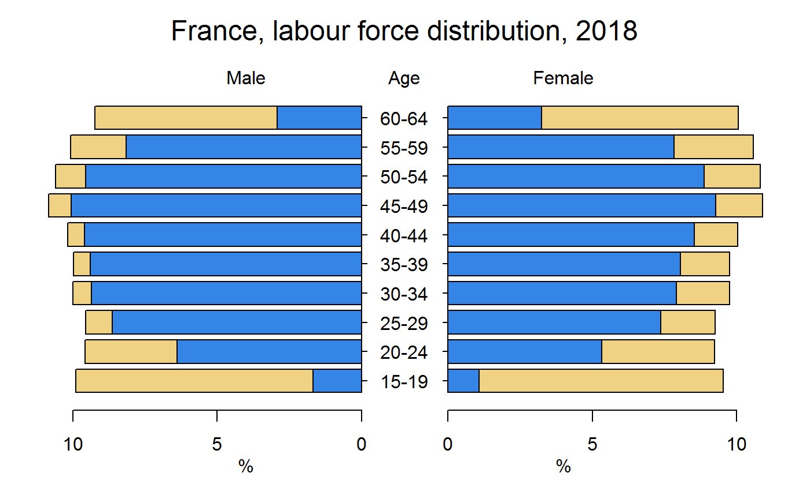

../vignettes/RilostatVisu.Rmd
RilostatVisu.Rmdrequire(dplyr)
require(tidyverse)
require(plotrix)
require(Rilostat)
test_ref_area = 'FRA'
test_time <- '2018'
test_indicator <- c('EIP_2EIP_SEX_AGE_NB', 'EAP_2EAP_SEX_AGE_NB')
test_age <- c("AGE_5YRBANDS_Y15-19", "AGE_5YRBANDS_Y20-24", "AGE_5YRBANDS_Y25-29", "AGE_5YRBANDS_Y30-34", "AGE_5YRBANDS_Y35-39", "AGE_5YRBANDS_Y40-44", "AGE_5YRBANDS_Y45-49", "AGE_5YRBANDS_Y50-54", "AGE_5YRBANDS_Y55-59", "AGE_5YRBANDS_Y60-64")
test_sex <- c('SEX_M', 'SEX_F')
test_source = 'ILO modelled estimates, May 2017'
ref_area_name <- label_ilostat(test_ref_area, dic = 'ref_area')
ref_age <- label_ilostat(test_age, dic = 'classif1') %>% str_split( pattern = ': ',simplify = TRUE) %>% .[,2]
ref_sex <- label_ilostat(test_sex, dic = 'sex') %>% str_split( pattern = ': ',simplify = TRUE) %>% .[,2]
color_code <- c("#3585E7","#F0D285")
X <- get_ilostat(id = paste0(test_ref_area, '_A'),
segment = 'ref_area',
filters = list( indicator = test_indicator,
time = test_time,
ref_area = test_ref_area,
classif1 = test_age,
sex = test_sex),
cache = FALSE) %>%
select(indicator, classif1, obs_value, sex) %>%
mutate( classif1 = label_ilostat(classif1, dic = 'classif1') %>% str_split( pattern = ': ',simplify = TRUE) %>% .[,2],
sex = label_ilostat(sex, dic = 'sex') %>% str_split( pattern = ': ',simplify = TRUE) %>% .[,2]) %>%
spread(indicator, obs_value) %>%
select_(.dots = list("sex", "classif1", val1 = test_indicator[1], val2 = test_indicator[2] ))
sideLeft <- X %>%
filter(sex %in% ref_sex[1]) %>%
select(-sex,-classif1) %>%
select(val2, val1) %>%
mutate( #val1 = val1 - val2,
TOT = val2 + val1,
STOT = TOT / sum(TOT) * 100,
SHval2 = val2 / TOT * STOT,
SHval1 = val1 / TOT * STOT) %>%
select(SHval2, SHval1) %>% as.matrix
sideright <- X %>%
filter(sex %in% ref_sex[2])%>%
select(val2, val1) %>%
mutate( # val1 = val1 - val2,
TOT = val2 + val1,
STOT = TOT / sum(TOT) * 100,
SHval2 = val2 / TOT * STOT,
SHval1 = val1 / TOT * STOT) %>%
select(SHval2, SHval1) %>% as.matrix
Label <- X %>% distinct(classif1) %>% .$classif1
FirstPar <- pyramid.plot(
lx = sideLeft,
rx = sideright,
labels = Label,
unit = "%",
lxcol = color_code,
rxcol = color_code,
laxlab = c(0, 5, 10), # left side axes
raxlab = c(0, 5, 10), # right side axes
top.labels = c("Male", "Age", "Female"),
gap = 1.5 # place for age labels
) +
mtext( # give it a title
text = paste0(ref_area_name , ", labour force distribution, ", test_time),
side = 3,
line = 2,
cex=1.5) 
require(tidyverse)
require(plotly)
require(Rilostat)
ref_region <- c('World', 'Asia and the Pacific', 'Americas', 'Europe and Central Asia', 'Africa', 'Arab States')
code_region <- get_ilostat_toc(segment = 'ref_area') %>% filter(ref_area.label %in% ref_region)
test <- get_ilostat(id = 'UNE_2EAP_SEX_AGE_RT_A',
filters = list( ref_area = code_region$ref_area,
sex = 'SEX_T',
classif1 = 'AGE_YTHADULT_YGE15',
time = '2017'),
cache = FALSE) %>%
mutate(ref_area.label = label_ilostat(ref_area, dic = 'ref_area') %>% factor(.,levels = ref_region)) %>%
arrange(obs_value) %>%
spread(sex, obs_value)
plot_ly(test, x = ~ref_area.label, y = ~SEX_T, type = 'bar') %>%
layout(title = "Global and regional unemployment rates, 2017",
titlefont = list(size = 18),
xaxis = list( title = "",
tickfont = list(size = 18)
),
yaxis = list( title = "Percentage",
titlefont = list(size = 18),
tickfont = list(size = 18)
)
) require(tidyverse)
require(plotly)
require(Rilostat)
ref_region <- c('World', 'Asia and the Pacific', 'Americas', 'Europe and Central Asia', 'Africa', 'Arab States')
code_region <- get_ilostat_toc(segment = 'ref_area') %>% filter(ref_area.label %in% ref_region)
test <- get_ilostat(id = 'UNE_2EAP_SEX_AGE_RT_A',
filters = list( ref_area = code_region$ref_area,
sex = c('SEX_M', 'SEX_F'),
classif1 = 'AGE_YTHADULT_YGE15',
time = '2017'),
cache = FALSE) %>%
mutate(ref_area.label = label_ilostat(ref_area, dic = 'ref_area') %>% factor(.,levels = ref_region)) %>%
arrange(obs_value) %>%
spread(sex, obs_value)
plot_ly( data = test ,
x = ~ref_area.label,
y = ~SEX_M,
type = 'bar',
name = 'Male') %>%
add_trace( y = ~SEX_F,
name = 'Female') %>%
layout( title = "Global and regional unemployment rates by sex, 2017",
xaxis = list( title = "",
tickfont = list(size = 18)
),
yaxis = list( title = "Percentage",
titlefont = list(size = 18),
tickfont = list(size = 18)
),
barmode = 'group'
) require(tidyverse)
require(plotly)
require(Rilostat)
ref_region <- c('World', 'South-Eastern Asia and the Pacific', 'Southern Asia', 'Eastern Asia', 'Latin America and the Caribbean', 'Sub-Saharan Africa', 'Central Asia', 'Arab States','Northern Africa', 'Northern America', 'Eastern Europe', 'Northern, Southern and Western Europe' )
code_region <- get_ilostat_toc(segment = 'ref_area') %>% filter(ref_area.label %in% ref_region)
test <- get_ilostat(id = 'UNE_2EAP_SEX_AGE_RT_A',
filters = list( ref_area = code_region$ref_area,
sex = c('SEX_M', 'SEX_F'),
classif1 = 'AGE_YTHADULT_YGE15',
time = '2017'),
cache = FALSE) %>%
mutate(ref_area.label = label_ilostat(ref_area, dic = 'ref_area') %>% factor(.,levels = ref_region)) %>%
arrange(obs_value) %>%
spread(sex, obs_value)
plot_ly( data = test ,
y = ~ref_area.label,
x = ~SEX_M,
type = 'bar',
name = 'Male',
orientation = 'h',
width = 1000,
height = 600,
sizes = c(20, 200)
) %>%
add_trace( x = ~SEX_F,
name = 'Female') %>%
layout( title = "Global and regional unemployment rates by sex, 2017",
subtitle = 'source: ilostat database',
yaxis = list( title = "",
tickfont = list(size = 12)
),
xaxis = list( title = "Percentage",
spikethickness = 30,
titlefont = list(size = 12),
tickfont = list(size = 12)
),
barmode = 'group',
margin = list(
t = 50, # top margin
r = 200, # right side margin
b = 50, # bottom margin
l = 400, # left side margin
pad = 5)
) require(tidyverse)
require(plotly)
require(Rilostat)
ref_region <- c('World')
code_region <- get_ilostat_toc(segment = 'ref_area') %>% filter(ref_area.label %in% ref_region)
test_age <- c("AGE_5YRBANDS_Y15-19", "AGE_5YRBANDS_Y20-24", "AGE_5YRBANDS_Y25-29", "AGE_5YRBANDS_Y30-34", "AGE_5YRBANDS_Y35-39", "AGE_5YRBANDS_Y40-44", "AGE_5YRBANDS_Y45-49", "AGE_5YRBANDS_Y50-54", "AGE_5YRBANDS_Y55-59", "AGE_5YRBANDS_Y60-64")
test <- get_ilostat(id = 'EAP_2EAP_SEX_AGE_NB_A',
filters = list( ref_area = code_region$ref_area,
sex = c('SEX_T'),
classif1 = test_age,
time = '2017'),
cache = FALSE) %>%
mutate( ref_area.label = label_ilostat(ref_area, dic = 'ref_area') ,
classif1 = label_ilostat(classif1, dic = 'classif1') %>% str_split( pattern = ': ',simplify = TRUE) %>% .[,2] %>% as.factor,
obs_value = obs_value / 1000) %>%
select(classif1, obs_value)
plot_ly(test,
x = ~classif1,
y = ~obs_value,
type = 'bar',
width = 800,
height = 600,
sizes = c(20, 200)) %>%
layout(title = "Global labour force by age band (ages 15 to 64), 2017",
titlefont = list(size = 12),
xaxis = list( title = "",
tickfont = list(size = 12)
),
yaxis = list( title = "Percentage",
titlefont = list(size = 12),
tickfont = list(size = 12)
)
)